Android Auto im Display deines Motorrads, kabellos
Google Maps, Waze, Spotify und der Assistant auf dem Bildschirm des Motorrads, verbindet sich von selbst, wenn du losfährst. Dazu: die günstigste Tankstelle in der Nähe, deine Fahrten mit Rekorden, Videos mit eingeblendeter Geschwindigkeit und eine App für die Uhr.
Kostenlos · ohne Werbung · Open Source · Android 10 oder neuer
Direkter Download der neuesten Version · auch auf GitHub · Neu in v2.4

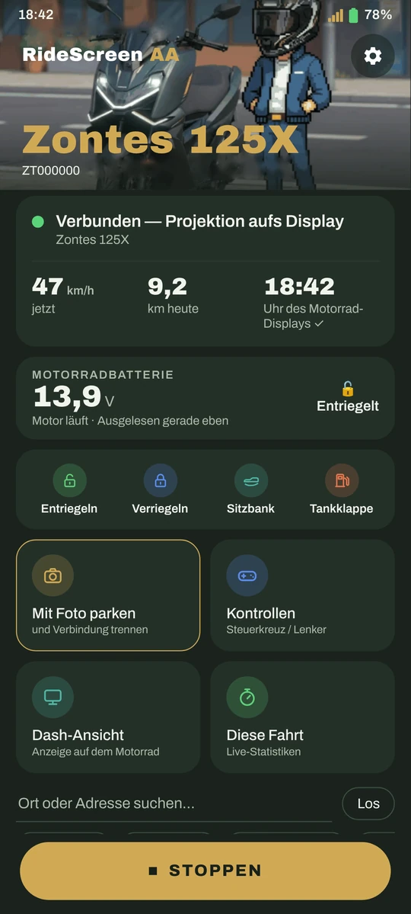
Funktioniert es mit meinem Motorrad?
Wenn dein Display einen QR-Code zum Verbinden des Handys zeigt (MotoPlay / EasyConnect), dann fast sicher ja. Die App wird täglich auf einer Zontes 125X getestet und baut auf OpenCfMoto auf, das mit vielen Marken mit demselben Display funktioniert.


Neu in v2.4
Der Schlüssel im Handy, ein Dashboard mit deinen Daten im Display und zehn Sprachen. Kostenlos, wie immer.
Der Schlüssel im Handy
Entriegeln, verriegeln und Sitzbank oder Tankdeckel öffnen aus der App, immer mit Bestätigung; danach prüft sie, wie das Motorrad geblieben ist. Nie während der Fahrt. Widget „Motorradsteuerung“, Entsperren beim Verbinden (optional), Sperren beendet die Fahrt (optional), und die McuID wird mit der Kamera aus dem QR des Displays gelesen.
Neu in 2.4OBD-Leser
Mit einem Bluetooth-Adapter ELM327, nur lesend: verfügbare Daten, Fehlercodes und live Drehzahl, Geschwindigkeit, Temperatur und Gas. Und Dauerlesen während der Projektion: „Motor läuft“ kommt jetzt aus der echten Drehzahl.
Neu in 2.4Dashboard im Display
Statt Android Auto deine Daten im Display: Stile Sport, Racing und Touring, bei Tag und Nacht. Auf den Bildschirm der 125X abgestimmt, und die Vorschau ist genau das, was du auf dem Motorrad siehst. Die Skala der Instrumente passt sich deinem Motorrad an. Ohne OBD kommt die Geschwindigkeit vom GPS.
Neu in 2.4Fahrten mit OBD-Daten
Wiedergabe und Video der Fahrt mit Gas und Drehzahl, und Routen zusammenführen (lässt sich rückgängig machen).
Neu in 2.4Im Display und beim Parken
Eine Begrüßung zu Beginn der Projektion, ein Abschied mit der Tageszusammenfassung und eine Regenwarnung beim Parken für die nächsten Stunden dort, wo du das Motorrad abgestellt hast.
Neu in 2.4Lautstärke mit Headset
Mit „Lenkertasten steuern Android Auto“ kannst du ▲/▼ jetzt für die Lautstärke behalten.
Neu in 2.4Puls von der Uhr
Der Puls deiner Uhr in der App (❓ Hilfe), alle 5 Sekunden. Und die Uhr-App in alle Sprachen übersetzt.
Neu in 2.4Zehn Sprachen
App und Uhr komplett auf Spanisch, Katalanisch, Englisch, Italienisch, Französisch, Deutsch, Portugiesisch, Griechisch, Russisch und Thai.
Neu in 2.4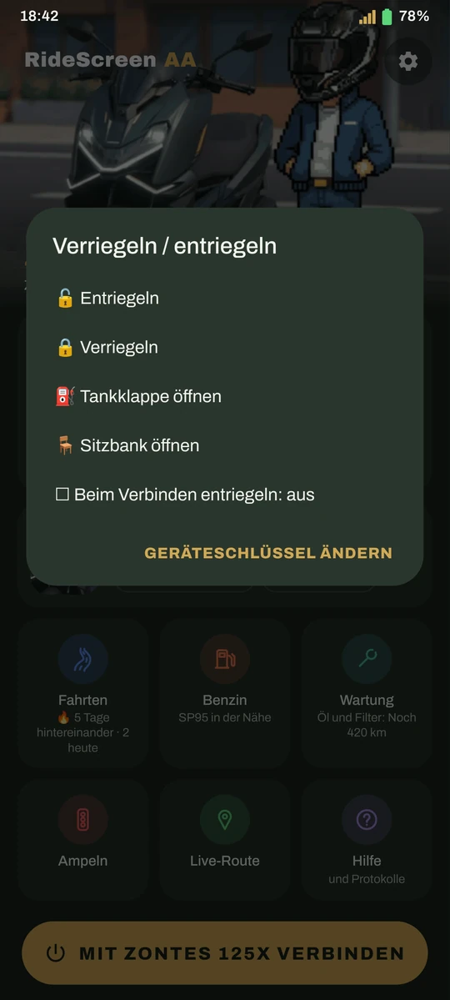
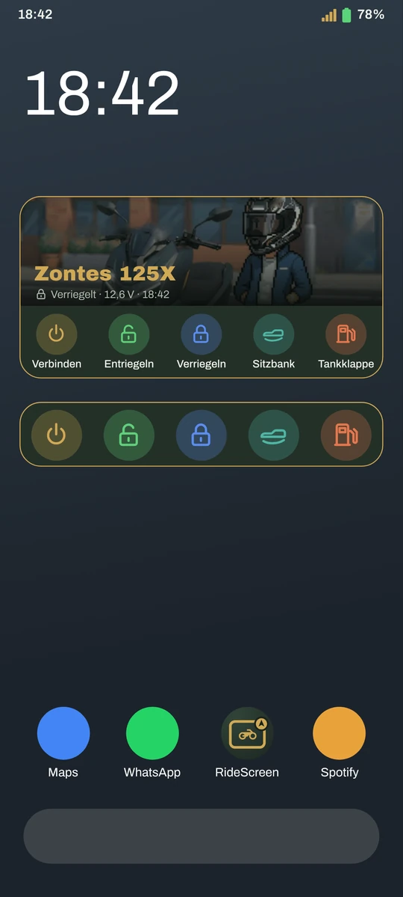
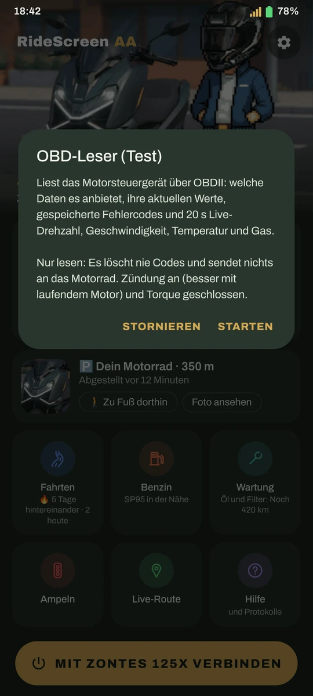
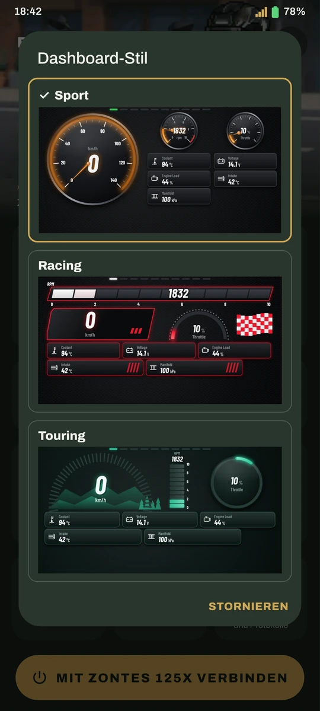
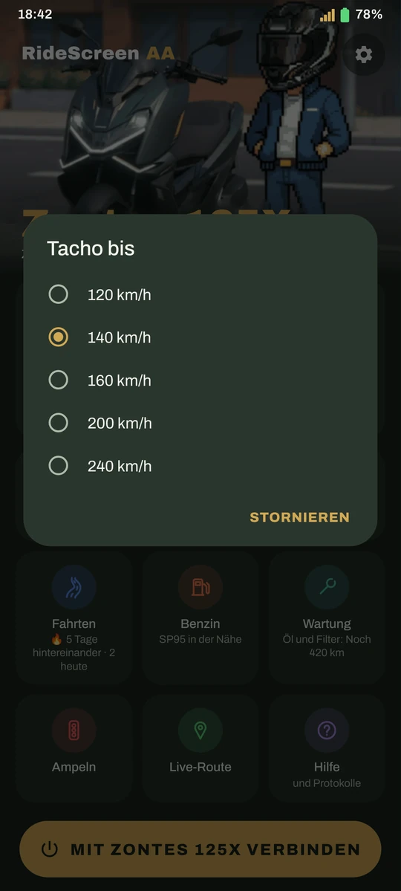
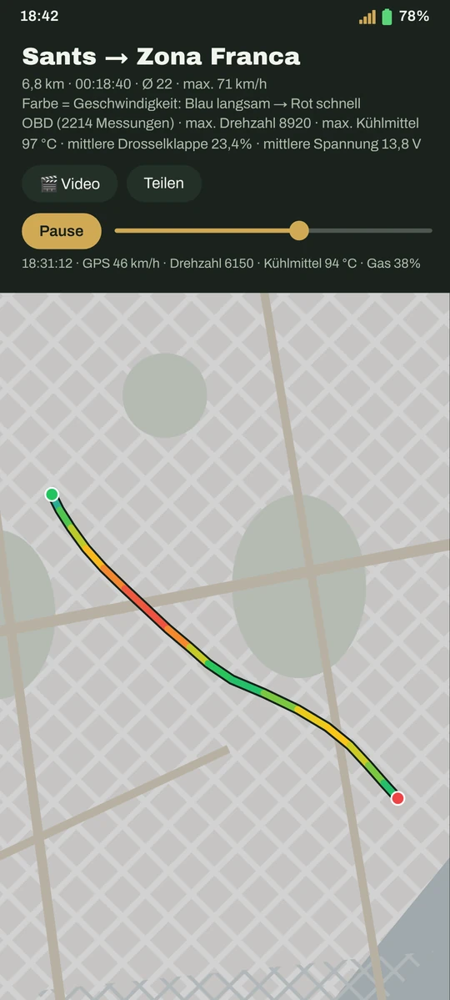
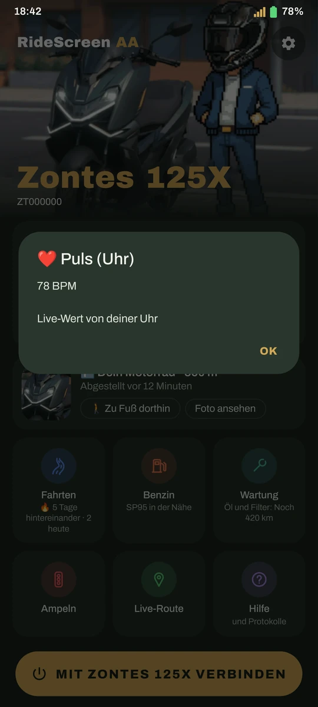
❤️ Danke
Besonderer Dank für die 2.4:
- Melo – für das iPhone, das er für die iOS-Tests geliehen hat
- Inky en Moto — für die Protokolle, mit denen die T350X zum Laufen kam, und sein Video über die App (youtube.com/@inkyenmoto)
- Luis Gil – für seine Hilfe beim OBD-Leser
- Allen Testern der Testversionen der 2.4
Unterstützer auf Ko-fi: Vielen Dank!
- Francisco Javier S.
- José Antonio R.
- Raul
- Luis Gil
- INKY
- Juanma M.
- Alfonsomicra
- Isra
- Dionisios S.
- José Manuel
- Karsten
- Francesc Xavier M.
- Jon
- Alberto
- Anonyme Unterstützer
Viel mehr als Android Auto
Verbindet sich von selbst
Motorrad starten, und Android Auto erscheint im Display – das Handy bleibt in der Tasche.
Bild nach Maß
Passe das Bild mit Pfeilen an dein Display an und sieh das Ergebnis live auf dem Motorrad.
"Ok Google"
Sprich mit dem Assistant über dein Headset, deine Uhr oder deine Brille.
Günstigster Sprit
Offizielle Preise für Super 95 in deiner Nähe, und Maps bringt dich hin. Nur in Spanien.
Deine Fahrten
Jede Fahrt wird automatisch gespeichert: Route nach Geschwindigkeit, Heatmap, Rekorde und Trophäen.
Video der Fahrt
Fügt deine Clips (Ray-Ban Meta, Actioncam, Handy) mit Karte, Geschwindigkeit und Uhrzeit zusammen.
Deine Ampeln
Wo du am meisten hältst, wie lange du wartest und welcher Weg wirklich schneller ist.
Wo ich geparkt habe
Speichert den Platz und ein Foto; der Kompass der Uhr führt dich zurück zum Motorrad.
Wartung
Öl, Riemen, TÜV… mit Erinnerung, wenn es fällig ist, und deinem echten Verbrauch.
Sturzerkennung
Alarm auf Handy und Uhr und, wenn du nicht reagierst, eine SMS mit deinem Standort.
ExperimentellDer Schlüssel im Handy
Entriegeln, verriegeln und Sitzbank oder Tankdeckel öffnen aus der App, immer mit Bestätigung.
Neu in 2.4Widget „Verbinden“
Ein Tippen auf dem Startbildschirm verbindet mit deinem Motorrad, mit dem Foto aus deiner Garage.
Neu in 2.3Sozius-Modus
Dein Sozius wählt Ziel und Musik und steuert Android Auto von seinem Handy aus.
Neu in 2.3Fahrten in Sicherheit
Deine Fahrt wird alle 30 s gespeichert, auch wenn die App geschlossen wird. Und du kannst GPX-Routen importieren.
Neu in 2.3So sieht es aus
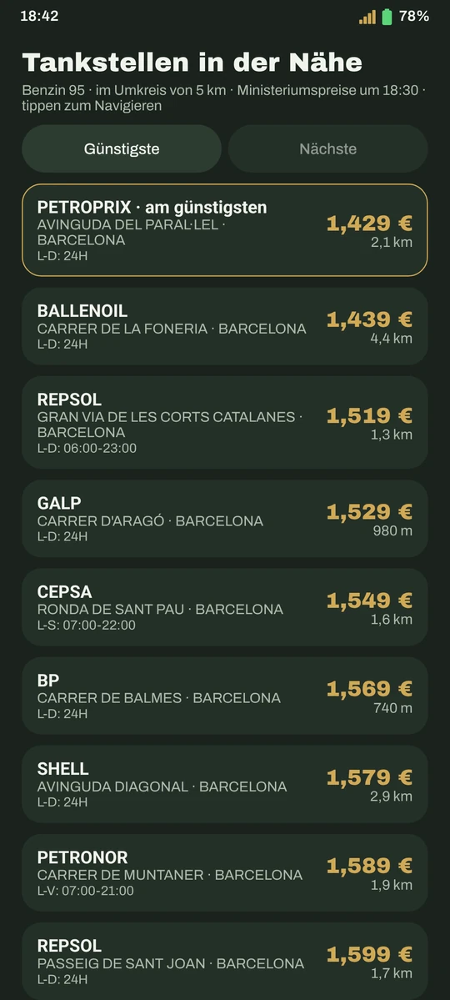
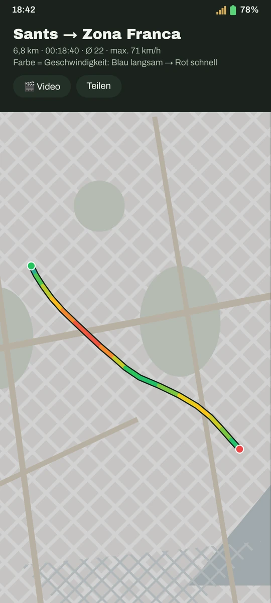
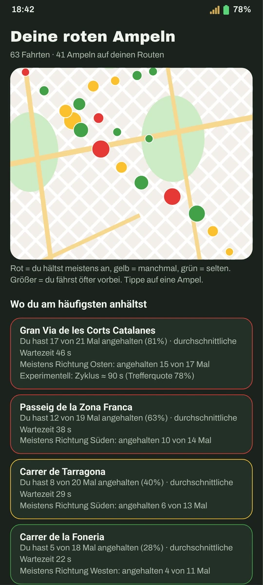
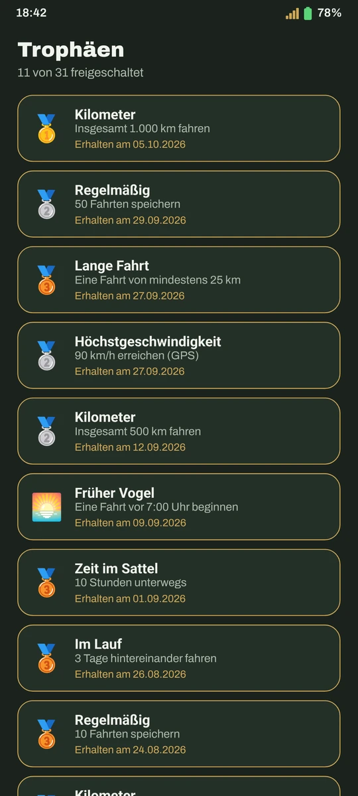
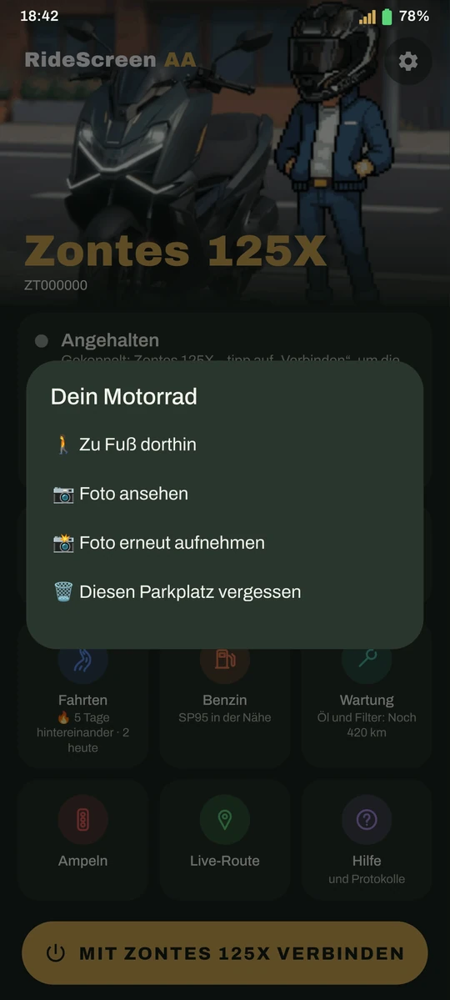
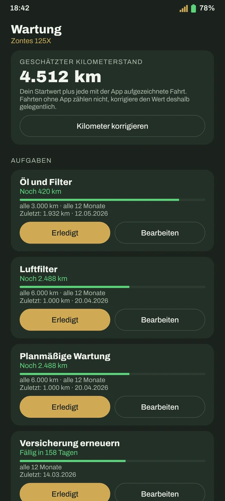
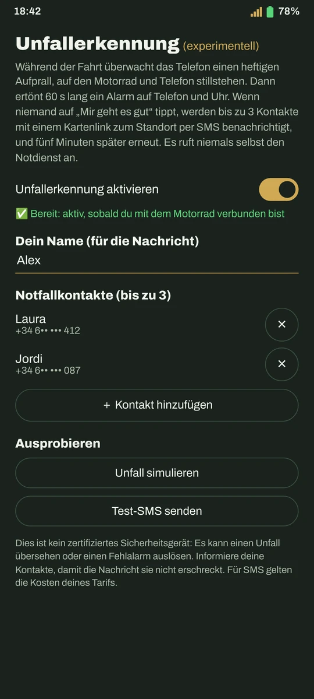

Bild anpassen, live im Display
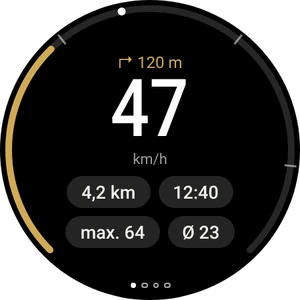
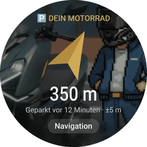
App für Wear-OS-Uhren · Anleitung für die Uhr
Fertig in 10 Minuten
APK herunterladen
Mit dem Button oben, direkt (oder von GitHub). Neue Versionen bietet dir die App selbst an.
Android Auto einrichten
Eine einmalige Einstellung in Android Auto. Die Anleitung zeigt es dir mit Screenshots.
QR-Code im Display scannen
Und auf Verbinden tippen. Ab dann verbindet sie sich von selbst, wenn du das Motorrad startest.
Häufige Fragen
Ist das eine offizielle Zontes-App?
Nein. Es ist ein unabhängiges Projekt, von einem Motorradfahrer für seine eigene Zontes gemacht und mit der Community geteilt. Es steht in keiner Verbindung zu Zontes, CFMoto, Carbit oder Google.
Was kostet sie?
Nichts. Sie ist kostenlos, ohne Werbung oder Abos, und der Code ist offen (Lizenz AGPL-3.0). Wenn sie dir nützt, kannst du mir einen Kaffee spendieren.
Warum ist sie nicht bei Google Play?
Sie ist auf dem Weg. Bis dahin lädst du sie von dieser Website; wenn Play Protect warnt, kennt es die App nur noch nicht: Weitere Details → Trotzdem installieren.
Was passiert mit meinen Daten?
Deine Fahrten, Fotos und Einstellungen bleiben auf deinem Handy: keine Konten, keine Cloud. Die App sendet nur anonyme Fehlerberichte (nichts, was dich identifiziert), damit wir Fehler beheben können, und du kannst sie abschalten.
Brauche ich mobile Daten?
Für Karten, Musik-Streaming und Spritpreise ja, genau wie Android Auto im Auto. Die Verbindung zum Motorrad läuft über sein eigenes WLAN.
Etwas funktioniert nicht, was tun?
Schau in die Anleitung, sie behandelt die häufigsten Fehler. Wenn es weiter hakt, in der App: ❓ Hilfe → Protokolle teilen, und schick es uns mit einer Beschreibung, was passiert ist.